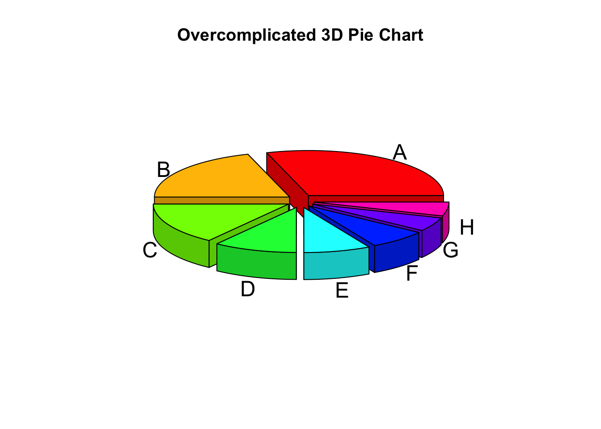

Effective Data Visualizations for DataFest
 Model: ChatGPT 4.5
Model: ChatGPT 4.5
I created a professional guide on effective data visualization tailored for the ASA DataFest competition, emphasizing the appropriate selection of chart types based on data structures, and clearly differentiating static and interactive visualizations. I included practical examples demonstrating both strong and weak visuals, highlighting common pitfalls like misleading axes and unnecessary complexity. I provided guidance to participants, so they can enhance visualization effectiveness under tight deadlines.

Introduction
The American Statistical Association (ASA) DataFest is a 48-hour data analysis competition where undergraduate teams work on large, real-world datasets. Creating clear, purposeful, and persuasive visualizations is essential to stand out and communicate your results effectively.
When you’re working under tight deadlines (as you will in DataFest), it pays off to plan your visuals carefully. The goal is to highlight insights quickly and engage both technical and non-technical audiences. Here we’ll discuss:
- Choosing the Right Visualization for your data type.
- The differences between static and interactive charts, along with pros and cons.
- Helpful resources for further learning.
- Examples of good vs. poor visualizations.
Choosing the Right Visualization: Data Type Matters
Data comes in many flavors—continuous, categorical, binary, ranked/ordinal, time series, etc. Each type often suggests a specific set of chart types:
- Continuous (e.g., height, weight, temperature): Histograms, boxplots, or scatter plots help show distribution or relationships between continuous variables.
- Categorical (e.g., gender, product category): Bar charts or mosaic plots make category comparisons clear.
- Binary (e.g., yes/no, 0/1): Similar to categorical, but often bars or pie charts if you only have two categories (though pie charts can be misleading with many segments).
- Ranked/Ordinal (e.g., Likert scale responses): Bar plots or ordered boxplots help display the progression from one rank to another.
- Time Series (continuous or discrete time): Line charts, area charts, or spark lines for concise trend viewing.
Always match the question you’re answering to the chart type: a time-trend question typically calls for a line chart, while a comparison across categories suggests a bar chart. This deliberate pairing of data type and visualization style helps keep your visuals clean and intuitive.
Static vs. Interactive Visualizations
Static Visualizations
Static plots (like bar charts, line charts, scatter plots) are quick to produce and easy to embed in reports or presentations. Their major advantage is simplicity: you can share a single image (e.g., .png or .pdf), ensuring everyone sees the same information. However, viewers can’t probe or explore the data beyond what you explicitly present.
Pros
- Easy to produce and share (e.g., in PDFs, slides).
- Good for final, polished, and unchanging presentations.
- Typically less prone to technical issues.
Cons
- No user interaction or deeper data exploration.
- You might need multiple static visuals to explore different angles.
Interactive Visualizations
Interactive charts allow users to hover, zoom, and filter data in real-time. Tools like Plotly, Altair, Bokeh, or JavaScript libraries like D3.js can bring your data to life. The main advantage is flexibility—audiences can explore aspects of the data that interest them, often uncovering deeper insights on their own.
Pros
- Engaging for end users; encourages exploration.
- Can handle richer datasets, with on-demand drilldowns.
- Allows a single figure to convey multiple layers of detail (via tooltips, dynamic filters, etc.).
Cons
- Requires more programming and environment setup (JavaScript or Python libraries, etc.).
- Harder to embed in static documents.
- Potential performance issues with large datasets or if viewers have older browsers/hardware.
Good Visualizations
Example 1: Good Static Visualization
Why it’s effective:
- Clear labels on both axes.
- Minimal “chartjunk.”
- Focuses on the key trend (sales vs. quarter).
Example 2: Good Interactive Visualization
Why it’s effective:
- Allows viewers to hover on each point to see make/model and exact values.
- Zoom/pan features let readers explore sub-regions of interest.
- Clear legend and use of color to delineate categories.
Bad Visualizations
Example 1: Poor Visualization (Misleading Axis)

Issue: The y-axis doesn’t start at zero, so the 3-point increase from 100 to 103 looks massive. This visual can mislead viewers into thinking the change is more significant than it is.
Example 2: Poor Visualization (Excessive Chartjunk)

Issue:
- Too many slices, making comparisons difficult.
- 3D perspective distorts slice sizes, making it harder to read actual proportions.
- Colors are overwhelming, especially with no legend to clarify each slice.
Conclusion
Data visualization is both an art and a science. Picking the right chart type begins with understanding your data structure (continuous, categorical, binary, etc.) and the question you need to answer. From there, weigh the trade-offs between static and interactive visuals:
- Static plots are simpler to share and best for final, polished presentations.
- Interactive charts enable on-the-spot data exploration but can be more complex to build.
As you gear up for DataFest, remember:
- Keep your visuals clean and focused.
- Make sure they honestly represent the underlying data.
- Encourage engagement where possible (especially for complex insights).
By planning early, you can leverage visual storytelling to impress both the judges and your peers—helping you stand out in the competition. Good luck, and happy visualizing!
Recommended Resources
Below are three resources to help deepen your visualization skillset:
Static Visualizations
“Top 10 Proven Data Visualization Best Practices” GoodData
This post emphasizes clarity, simplicity, and matching chart types to data.
Interactive Visualizations
“Interactive Python Plots: Getting Started and Best Packages” Fabi.ai
A beginner-friendly guide covering Plotly, Altair, and Bokeh. Demonstrates tooltips, panning, and zooming.
Misleading/Poor Visualizations
“Misleading Data Visualization – What to Avoid” Coupler.io
Showcases common pitfalls (truncated axes, chartjunk, misleading color scales) and how to avoid them.